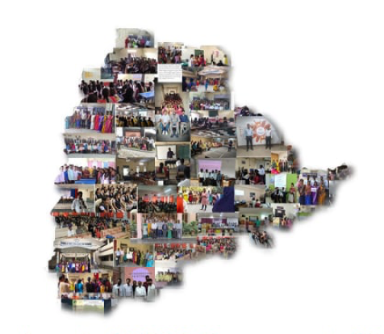

A fish is an aquatic,
anamniotic, gill-bearing vertebrate animal with a tough cranium to protect the brain, but lacking limbs with digits.
python -m pip install --upgrade pip wheel pip install scikit-build
some types of fishes are:
IMAGES id="gallery"



rupee ₹
Google Wikipedia gallery